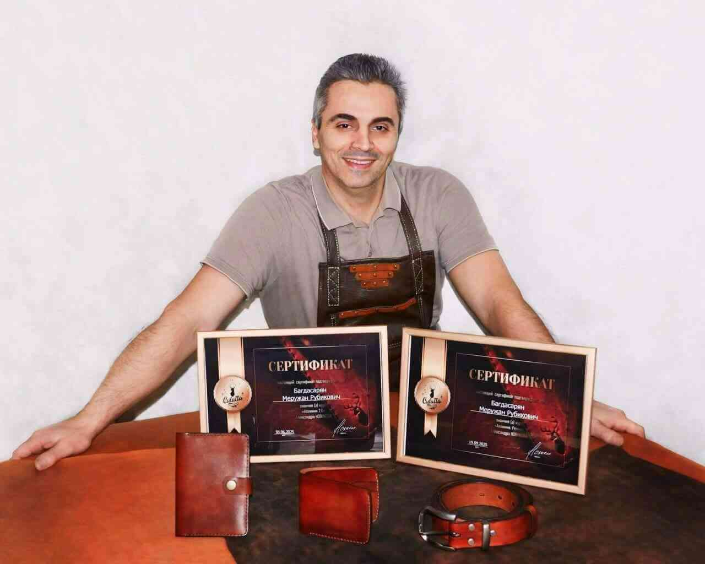

Minusta

Käsityöverstaani syntyi omasta halustani tehdä nahkatuotteita, joissa yhdistyvät käsityötaito, laatu, kestävyys ja persoonallinen ilme.
Olen Meruzhan, työpajan takana oleva nahkamestari ja jokainen valmistamani tuote on harkittu kokonaisuus, jossa näkyvät oppiminen, kokemus ja kunnioitus materiaalia kohtaan. Minulla on yli 20 vuoden kokemus nahkan kanssa työskentelystä.
Valmistan jokaisen vyön, laukun ja asusteen käsin luonnonnahasta. Huolellinen viimeistely, tarkkuus ja materiaalin ymmärtäminen takaavat tuotteet, jotka kestävät käyttöä ja ikääntyvät arvokkaasti. Filosofiani on yksinkertainen: tehdä esineitä, jotka tuntuvat hyvältä käyttää ja säilyttävät merkityksensä ajan myötä.
Työni on jatkuvaa kehitystä. Opettelen uusia tekniikoita, kouluttaudun ja kokeilen, jotta voin tarjota entistä kestäviä, toimivia ja ilmeikkäitä tuotteita. Jokainen työ heijastaa sitoutumistani laatuun ja aitoon käsityöhön.
LEATHER ETUDE on tarkoitettu sinulle, joka arvostat yksilöllisyyttä, luonnonmateriaaleja ja pitkäikäisiä ratkaisuja.
En ole massatuottaja — haluan luoda merkityksellisiä ja uniikkeja esineitä, jotka kulkevat mukanasi vuosien ajan.
Kiitos, että arvostat käsityötä.
LEATHER ETUDE - käsityötä, joka kestää.